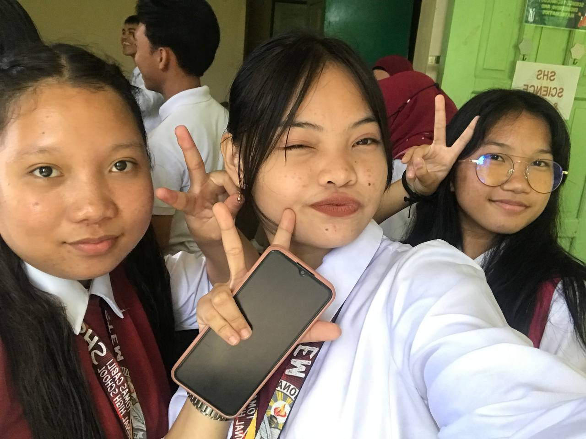
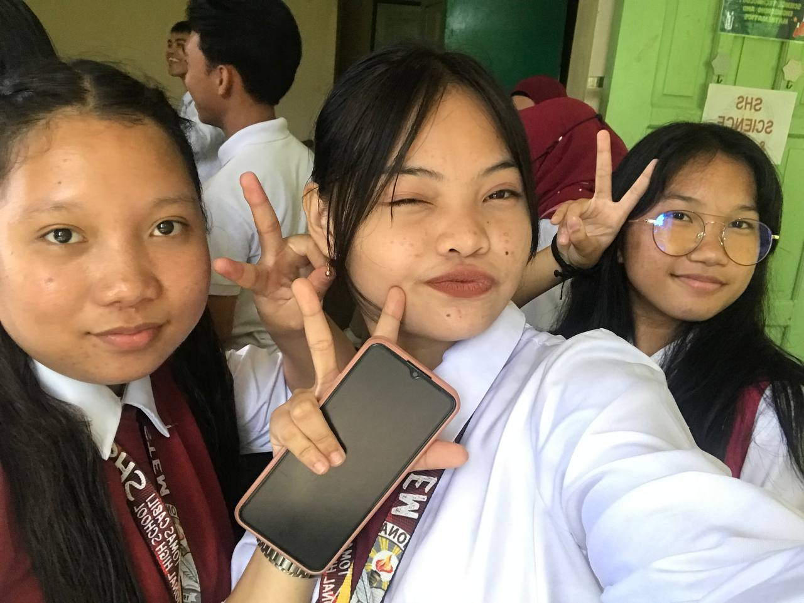

"The pain that you've feel, cannot compare to the joy that is coming- Romans 8:18"
Why do you choose STEM? "Nag STEM ako kasi STEM Major si Mingyui🥰"
More...
"The pain that you've feel, cannot compare to the joy that is coming- Romans 8:18"
Why do you choose STEM? "Nag STEM ako kasi STEM Major si Mingyui🥰"
What People Around You thinks of You.
Hi Rose, my first friend last year hangtud karun hi🤗, As we part ways😔, remember that our friendship will always be a cherished chapter in my life. May your journey ahead be filled with joy, success, and new adventures. Keep shining bright! Until we meet again. Wishing you all the best!
The once aloof and nonchalant person but now has turned into a different version of herself, a more better version of herself. From Rose to baby Jean, from Trasons to bibi HAHAHAH and from Gillian to Omee (I can still remember that one bus funny momints HAHAHA). This one cute and pretty girl is one of a kind. One of my source of laughter ( literally have a VERYY contagious laugh BWHAHAHHA). I never expected for her to be part of my circle of friends actually, but I guess God really have his own waypos. Medj taas na, stap nako HAHAHAHA labyu biii
Hey girl! Sa gamay na time nga nag-ila ta, NGANONG DAGHAN NAKAG ALAM SA AKOA(?) eme lang. Mangayo raman gyud kog notes sa imoha tas turn into this na dayun atong friendship napakaslayy. Ikaw ang person na mabantayan ko if everything goes wrong gyud, na dapat walay makabalo but very thankful ko sa part na ana. So many things happened in the span sa time na we've been together kay a lot of memories ang nahitabo gyud. Unta rose ang path na want nimo makuha nimo even though nawala imong love for bio but I know na god will guide you to the right path na for you and don't say na di ka ganahan mag Engineering kay bogo kag math but make it as a inspiration na kaya nimo na bahalag naa kay shortcomings basta malearn ra bitaw na, naa rako mohelp gyud. Just call me and I'll be there. From nonchalant to sabaan era nimo HAHAHHAHA but rose thankful ko sa imo and proud kay ko nimo, loveyouuu and thankkkyouuu!!<3333
Huy mads magxylo pa baya daw ta ana ka HAHAHHAHA tarong tarong dinha, pangita nag 6ft tall para di naka sig pogi hunting dinha among baby rose
XName: Rose Jean Trasona
Age:
Status:
Birth Date:
Sex: Female
Hobbies:
Skills & Tallent:
Best Friends: Sumilayyyyy, Saniiii!, Gilliannnnn
 
